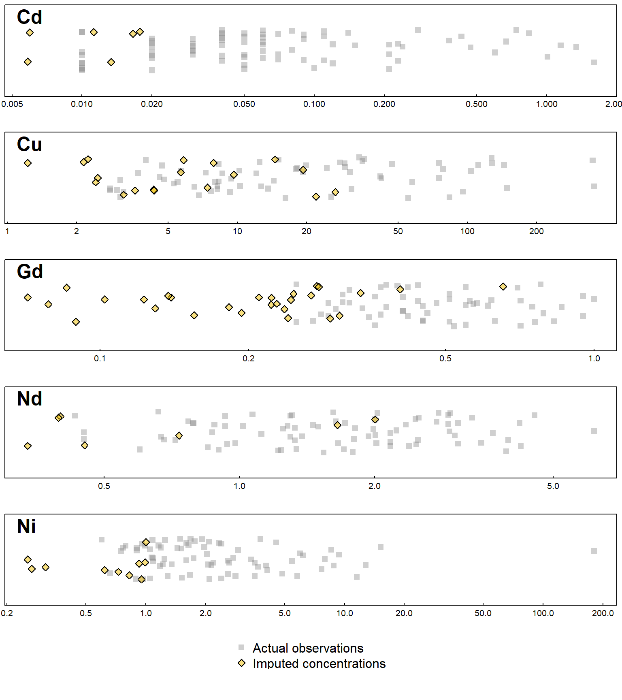
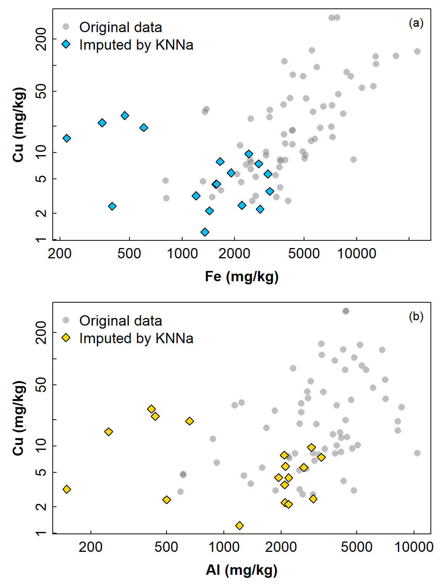

As we've already seen, compositional data, defined as any measurements which are proportions of some whole, are encountered in environmental science and many other disciplines. Much of this website examines chemical compositions which, depending on the units of measurement, may sum to a fixed value of 1,000,000 mg/kg, or 100%, and so on. This fixed-sum closure means that individual concentrations are not independent, and so we may get incorrect or invalid results from statistical procedures applied to the raw data, particularly those which assess relationships between variables, such as correlations and numerous multivariate methods.
Fortunately for us, this issue has been recognised since the work of Aitchison in the 1980s (Reimann et al., 2008). Specialised transformations which remove the fixed-sum closure are available, which yield a dataset that can be analysed with confidence that the relationships we observe reflect real phenomena such as the element ratios expected in minerals.
Another issue that is common with environmental data is that of missing values. Numbers in our data are missing for frustrating, but perfectly valid reasons, especially when multiple measurements are involved:
We could simply accept that we don't have all the information that we would like, but that can cause other undesirable issues. For example, in some multivariate data analyses, a single missing value for a sample can result in none of the measurements for that sample being used, which seems a waste of otherwise good data. We could (a) live with this; (b) replace the missing value with a logical but arbitrary value (e.g. half the detection limit), or (c) use compositional relationships or similarity to calculate an estimate of what the missing value (probably) was (see Reimann et al. 2008 for more details). We'll look at option (c) in the material that follows.
These concepts are embedded in a couple of R packages that we will
use in this session: compositions (van den Boogaart and
Tolosana-Delgado, 2025) and robCompositions (Templ et
al., 2011):
library(compositions)
library(robCompositions)
library(knitr) # prettier Tables using the kable functionWe'll also need some data to illustrate the procedures. We'll use an urban soil/sediment geochemistry dataset from Smith's Lake and Charles Veryard Reserves in North Perth, Western Australia (see Rate, 2021 for details).
giturl <- "https://github.com/Ratey-AtUWA/Learn-R-web/raw/refs/heads/main/"
sv18 <- read.csv(paste0(giturl, "sv18orig.csv"), stringsAsFactors = TRUE)The first thing we'll check is how many missing values the dataset
variables have. To do this we use the sapply function to
apply the function sum(is.na(x)) to each column in the
sv18 data frame:
## range Depth_upper Depth_lower pH EC As Cd
## 12 12 12 12 13 2 6
## Cu Gd Mo Nd Ni Pb S
## 18 28 7 7 10 1 2
## Sr Th Zn
## 5 3 1We can use sum(is.na(...)) since is.na
outputs a vector of TRUE or FALSE values, and
since TRUE has a value of 1 and FALSE = 0, the
sum of that vector counts the TRUE, that is NA
or missing, values.
The output above shows a dataset with many missing values. Ignoring
range and the two depth columns (which have 12 missing
values corresponding to 12 road dust samples), we have missing values
for pH, EC, As, Cd, Cu, Gd, Mo, Nd, Ni, Pb, S, Sr, Th and Zn. I suspect
we had a faulty pH/EC meter in the field, and the concentrations of
several elements were censored to NA as they were below the
detection limit for the aqua regia digestion / ICP-OES method
used for elemental analysis.
There's not so much we can do about the missing EC and pH values (for
now), since they are not part of our fixed-sum closed composition. But
we'll have a go at imputing concentrations for the missing elemental
data. For the prediction of missing values, we need to apply a
transformation that removes fixed-sum closure. This is done using one of
the log-ratio transformations; the imputation method we'll
implement uses the centered log-ratio (CLR) transformation (see here for a definition). Since
taking logarithms is involved, it's worth checking if we have any
negative or zero values in our elemental concentrations (columns
12:37 in the sv18 data frame):
## Al As Ba Ca Cd Ce Cr Cu Fe Gd K La Mg Mn Mo
## FALSE FALSE FALSE FALSE FALSE FALSE FALSE FALSE FALSE FALSE FALSE FALSE FALSE FALSE FALSE
## Na Nd Ni P Pb S Sr Th V Y Zn
## FALSE FALSE FALSE FALSE FALSE FALSE FALSE FALSE FALSE FALSE FALSEThe check returns all FALSE values, so we have no
negative or zero concentrations. We can proceed...
💡 What other ways could we check, using R function(s), whether we have any negative or zero concentrations?¹
We now use one of the imputation functions from the
robCompositions R package to calculate estimates for our
missing values. There are a couple of sensible choices:
impCoda which is the most flexible and is specifically
designed for compositional data, and impKNNa which uses a
K-nearest neighbour method in CLR space. The name impCoda
is an abbreviation for ‘impute Compositional data’, and although it is
probably best-suited to compositional data, my testing shows that it
sometimes produced estimates several orders of magnitude below
analytical detection limits, or occasionally negative values after
back-transformation. As we usually want to do both compositional and
conventional statistical analyses, we're going to use the
impKNNa function.
Before applying K-nearest neighbour estimation, the
impKNNa function transforms the data using centred
log-ratios.
Before we do more analysis with the imputed data we should check how
well it worked! The simplest way to do this is with the
stripchart function to produce 1-dimensional scatter
plots:
data0 <- as.data.frame(imputed$xOrig)
data1 <- as.data.frame(imputed$xImp)
elemz <- c("Cd","Cu","Gd","Nd","Ni")
par(mar=c(3,.5,.5,.5),mgp=c(1.5,0.2,0), tcl=0.2, font.lab=2, cex.lab=1.5)
layout(matrix(c(rep(1:5, each=2),6),ncol=1))
for(i in seq_along(elemz)){
stripchart(data0[,elemz[i]], method="jitter", pch=15, cex=1.5, col="#80808060", log="x",
xlim=range(data1[,elemz[i]]), ylim=c(0.8,1.2))
stripchart(data1[,elemz[i]][which(is.na(data0[,elemz[i]]))], add=TRUE,
method="jitter", bg="#f0c00080", pch=23, cex=1.5)
mtext(elemz[i], side=3, adj=0.02, line=-2, cex=1.5, font=2)
}
plot(0:1,0:1, axes=F, bty="n", ,type="n", ann=F)
legend("center", legend=c("Actual observations","Imputed concentrations"),
pch=c(15,23), col=c("#80808060","#000"), pt.bg="#f0c00080",
bty="n", cex=1.5, pt.cex=1.5)
Figure 1: One-dimensional scatter plots showing imputed values for Cd, Cu, Gd, Nd, and Ni concentrations superimposed on the original concentrations. Imputation was performed on the clr-transformed compositional data using K-nearest-neighbour estimation.
Mostly this looks ok; the imputed concentrations for most elements (of those presented in Figure 1) are at the lower end of concentrations for that element, which we might expect for missing values caused by below-detection censoring. However, Cu has imputed concentrations up to about 30 mg/kg, which would not be below the detection limit, so we'll look at Cu another way.
par(mfrow=c(2,1), mar=c(3,3,.5,.5),mgp=c(1.5,0.2,0), tcl=0.2, font.lab=2, cex=1.2)
with(data0, plot(Cu ~ Fe, pch=16, col="#80808080", log="xy", ylim=range(data1[,"Cu"]),
xlab="Fe (mg/kg)", ylab="Cu (mg/kg)"))
with(data1[which(is.na(data0[,"Cu"])),], points(Cu ~ Fe, pch=23, bg="deepskyblue"))
legend("topleft", bty="n", legend=c("Original data","Imputed by KNNa"),
pch=c(16,23), col=c("#80808080",1), pt.bg=c(NA,"deepskyblue"))
mtext("(a)", line=-1.2, adj=0.98)
with(data0, plot(Cu ~ Al, pch=16, col="#80808080", log="xy", ylim=range(data1[,"Cu"]),
xlab="Al (mg/kg)", ylab="Cu (mg/kg)"))
with(data1[which(is.na(data0[,"Cu"])),c("Al","Cu")], points(Cu ~ Al, pch=23, bg="gold"))
legend("topleft", bty="n", legend=c("Original data","Imputed by KNNa"),
pch=c(16,23), col=c("#80808080",1), pt.bg=c(NA,"gold"))
mtext("(b)", line=-1.2, adj=0.98)
Figure 2: Relationship of Cu with (a) Fe and (b) Al, showing imputed Cu concentrations superimposed on the original data. Imputation was performed on the clr-transformed compositional data using K-nearest-neighbour estimation.
In Figure 2, it seems like the greatest imputed Cu concentrations (14-27 mg/kg) plot outside the general Cu~Fe or Cu~Al trends. Given this evidence, I would be concerned that the imputation has estimated unrealistic concentrations that don't match major compositional trends. The simplest solution would be to remove Cu from further analyses, but that may unnecessarily discard the valid, measured Cu concentrations. We can compare retaining Cu with deleting the entire column in the analyses to follow.
The compositions package has functions that will
implement various log-ratio transformations to remove fixed-sum closure,
such as centred log-ratios or isometric log-ratios (ILR; Egozcue et
al., 2024)². We'll use the centred log-ratio
transformation for now, as that lets us do some other useful things.
# do the transformation on the imputed data...
clrcomp <- clr(imputed$xImp)
# ...then add the transformed composition to the data
sv18clr <- data.frame(sv18[,1:11], as.data.frame(clrcomp))You should inspect the new data frame using str(),
summary(), or even print() to confirm that you
have what you think you made! Another good way we can check is to
calculate sums of compositions across rows. For clr-transformed
compositions, these row sums should all be zero:
## [1] 0 0 0 0 0 0 0 0 0 0 0 0 0 0 0 0 0 0 0 0 0 0 0 0 0 0 0 0 0 0 0 0 0 0 0 0 0 0 0 0 0 0 0 0 0
## [46] 0 0 0 0 0 0 0 0 0 0 0 0 0 0 0 0 0 0 0 0 0 0 0 0 0 0 0 0 0 0 0 0 0 0 0 0 0 0 0 0We can see that the row sums are all zero (to 9 decimal places,
anyway!), so the clr-transformation seems to have worked.
💡 You can check for yourself what the output is without
rounding...
We're now ready for some compositional data analysis; often this is a multivariate endeavour. One of the simplest but nevertheless useful things we can do is generate a distance matrix (or ‘dissimilarity matrix’, as we do somewhat differently for ecological data). With clr-compositions, Euclidean distance gives us Aitchison distances. At the very least, Aitchison distances can show us which samples are most similar across the multivariate composition, with no artefacts caused by fixed-sum closure. We can also use the Aitchison distance matrix as the input for multivariate methods like hierarchical cluster analysis.
# method = "euclidean" is actually the default, but we show it explicitly here
Adists <- dist(sv18clr[,12:37], method = "euclidean", upper = TRUE)We can now do something with these distances. Let's have a look at
sample (dis)similarity. First we'll make a new TypeID
column to more clearly identify each sample:
sv18clr$TypeID <- paste0(as.character(sv18clr$Type),"_",sv18clr$Sample)
row.names(Adists) <- sv18clr$TypeID
colnames(Adists) <- sv18clr$TypeIDLet's pick a few samples (not all; we have 85) at random and see which other samples they are similar to compositionally:
## [1] "Soil_07.2" "Sediment_08.5.1" "Soil_04.2.1" "Road dust_10.01" "Soil_03.8"We have a subset of samples covering all sample types. Let's check which other samples they are similar to. and see if the similarities make sense:
nsim <- 6
distList <- setNames(
list(rep(NA,nsim), rep(NA,nsim), rep(NA,nsim), rep(NA,nsim), rep(NA,nsim)),
pick5)
for(i in seq_along(pick5)){
distList[[i]] <- row.names(Adists)[order(Adists[,pick5[i]])][1:nsim]
}
kable(as.data.frame(distList),
caption=paste("Table 1. The",nsim,
"most similar samples to a random subset, based on Aitchison distances."))| Soil_07.2 | Sediment_08.5.1 | Soil_04.2.1 | Road.dust_10.01 | Soil_03.8 |
|---|---|---|---|---|
| Soil_07.2 | Sediment_08.5.1 | Soil_04.2.1 | Road dust_10.01 | Soil_03.8 |
| Soil_07.4 | Sediment_08.5.12 | Soil_07.1 | Road dust_10.071 | Soil_04.1.6 |
| Soil_07.6 | Sediment_09.02 | Soil_04.2.2 | Road dust_10.072 | Soil_06.05A |
| Soil_03.6 | Sediment_09.06 | Soil_04.2.5 | Road dust_10.02 | Soil_06.07A |
| Soil_03.5 | Sediment_09.03 | Soil_04.2.6 | Soil_05.6 | Soil_02.1.6 |
| Soil_03.7 | Sediment_09.01 | Soil_04.1.6 | Soil_05.7 | Soil_06.06A |
The results in Table 1 make sense: firstly, each sample is most
similar to itself (i.e. distance = 0). Second, in all but one
case, the most similar samples are of the same Type. Third,
in many cases the samples are from the same soil core, or sediment
sampled from the same part of Smith's Lake.
You can imagine how an analysis of similarity like this might be useful. For example, we might suspect that the sediment in Smith's Lake was composed of material eroded from surrounding soil, or that surface soils near the reserve boundary was affected by transported road dust. The Aitchison distances could provide some evidence to support such hypotheses (or not).
Remember that we were suspicious that the imputed Cu concentrations didn't appear to be correct? Let's try the clr-transformation and (dis)similarity analysis again, but removing Cu altogether.
# edit, collate, transform imputed data
noCu <- which(colnames(imputed$xImp)=="Cu")
# do the clr-transform
sv18clrNoCu <- data.frame(sv18[,1:11], clr(imputed$xImp[,-noCu]))
# make a new Aitchison distance matrix
AdistNoCu <- dist(sv18clrNoCu[,12:36], method = "euclidean", upper = TRUE)
row.names(AdistNoCu) <- sv18clr$TypeID
colnames(AdistNoCu) <- sv18clr$TypeIDNow we find the most similar samples to our subset, using the Cu-free Aitchison distances:
nsim <- 6
distListNoCu <- setNames(
list(rep(NA,nsim), rep(NA,nsim), rep(NA,nsim), rep(NA,nsim), rep(NA,nsim)),
pick5)
for(i in seq_along(pick5)){
distListNoCu[[i]] <- row.names(AdistNoCu)[order(AdistNoCu[,pick5[i]])][1:nsim]
}
kable(as.data.frame(distListNoCu),
caption=paste("Table 2. The",nsim,
"most similar samples to a random subset, based on Aitchison distances when Cu is removed."))| Soil_07.2 | Sediment_08.5.1 | Soil_04.2.1 | Road.dust_10.01 | Soil_03.8 |
|---|---|---|---|---|
| Soil_07.2 | Sediment_08.5.1 | Soil_04.2.1 | Road dust_10.01 | Soil_03.8 |
| Soil_07.4 | Sediment_08.5.12 | Soil_07.1 | Road dust_10.02 | Soil_06.05A |
| Soil_07.6 | Sediment_09.02 | Soil_04.2.5 | Road dust_10.072 | Soil_06.06A |
| Soil_03.6 | Sediment_09.06 | Soil_04.2.6 | Road dust_10.08 | Soil_04.1.6 |
| Soil_03.5 | Sediment_09.03 | Soil_04.2.2 | Road dust_10.071 | Soil_06.04A |
| Soil_07.3 | Sediment_09.05 | Soil_04.1.6 | Soil_07.7 | Soil_06.07A |
The similar samples identified in Table 2 resemble those in Table 1; the tables are not identical, but most of the differences are changing the ranking of the top-5 similar samples (excluding self-similarity). This suggests that, despite the potentially unrealistic imputed Cu concentrations, the overall compositional structure remained broadly similar, with some alterations in the exact ranking of nearest neighbours.
So what is the solution here? I don't think there is a “right” answer. My approach would be to accept the imputed Cu concentrations; in this case, I think the advantages of removing missing values outweigh the minor changes in interpretation we see with the Aitchison similarity analysis. We could do more checking; for example, comparing other multivariate measures such as the weightings of variables and grouping of observations in a principal component analysis.
Alternatively, it may be worth trying to improve the estimation of Cu
concentrations by imputation; there are options in the
impKNNa() function such as the number of nearest
neighbours, k (the default is k=3), or
specifying an enhanced search for nearest neighbour points in
compositional space (primitive = TRUE).
💡 We won't try
that now, but feel free to tweak the imputation yourself!
Of course,
deducing whether or not the imputation worked is somewhat subjective.
Checking the concentration ranges using stripchart seems
worthwhile, however, and looking at the relationship(s) of imputed
elements with Al, Fe or other capacity-controlling proxies is
scientifically reasonable (e.g. Hamon et al.,
2004).
This seems an extreme option, since Cu is censored in 18 out of 85
samples.
💡 We'll leave this as another exercise for you to try.
Obviously, if some samples are removed, we can't calculate similarity
for them...
Egozcue, J. J., Gozzi, C., Buccianti, A., & Pawlowsky-Glahn, V. (2024). Exploring geochemical data using compositional techniques: A practical guide. Journal of Geochemical Exploration, 258, 107385. doi:10.1016/j.gexplo.2024.107385
Hamon, R. E., McLaughlin, M. J., Gilkes, R. J., Rate, A. W., Zarcinas, B., Robertson, A., Cozens, G., Radford, N., & Bettenay, L. (2004). Geochemical indices allow estimation of heavy metal background concentrations in soils. Global Biogeochemical Cycles, 18(GB1014). doi:10.1029/2003GB002063
Rate, A. W. (2021). Spatial analysis of soil trace element contaminants in urban public open space, Perth, Western Australia. Soil Systems, 5(3), 46. doi:10.3390/soilsystems5030046
Reimann, C., Filzmoser, P., Garrett, R. G., & Dutter, R. (2008). Statistical Data Analysis Explained: Applied Environmental Statistics with R (First ed.). John Wiley & Sons, Chichester, UK.
Templ M, Hron K, Filzmoser P (2011). robCompositions: an
R-package for robust statistical analysis of compositional data.
In V. Pawlowsky-Glahn and A. Buccianti, editors,
Compositional Data Analysis. Theory and Applications, pp.
341-355, John Wiley & Sons, Chichester (UK). https://cran.r-project.org/web/packages/robCompositions/index.html
van den Boogaart KG, Tolosana-Delgado R, Bren M (2025).
compositions: Compositional Data Analysis. doi:10.32614/CRAN.package.compositions. R package
version 2.0-9.
¹ 💡 Try summary(sv18[,12:37]) or apply(sv18[,12:37],
2, min, na.rm=T). There are other ways too!
² Additive (alr) and Pairwise (pwlr) log-ratio transformations are also available but are less commonly used.
CC-BY-SA • All content by Ratey-AtUWA. My employer does not necessarily know about or endorse the content of this website.
Created with rmarkdown in RStudio. Currently using the free yeti theme from Bootswatch.